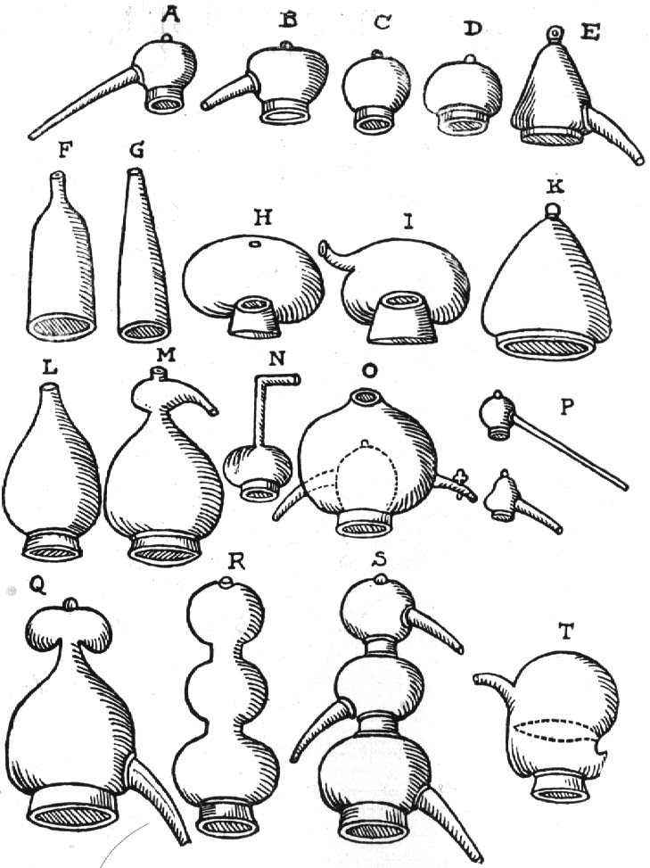

Jó tanácsok és "Hogyan tovább?"
A hagyma
1919-ben, amikor az influenzajárvány megölt több millió embert (valószínű az USA-ban), volt egy orvos, aki sok farmert meglátogatott, hogy megpróbáljon segíteni a járvány elterjedésében. Egyszer egy családhoz érkezett, és csodálkozott, hogy mindenki egészséges. A feleség közölte, hogy egy edényben hámozatlan hagymát tartanak a szobában. Az orvos nem akarta elhinni, és kérte, hogy vizsgálhassa meg a hagymát mikroszkóppal. A hagymában megtalálta az influenzavírust. Szemmel láthatóan a hagyma bevonzotta a mikrobát, így tartva a családot egészségesen.
A cikk írója hallott egy történetet a fodrászától. Néhány éve az alkalmazottai és sok kuncsaftja is influenzások voltak. A következő évben több edényben hagymát helyezett el különböző helyre a fodrász helyiségben. Meglepetésére senki sem betegedett meg az alkalmazottai közül.
- Egy másik eset: Egy illetőnek tüdőgyulladása volt. A hagyma mindkét végét levágta, majd az egyik végét felszúrta egy villára majd a villa nyelét beleállította egy vázába és a beteg paciens mellé helyezte az éjszakára. Reggelre a hagyma fekete lett a mikrobáktól. A cikk írója is kipróbálta ilyen esetben a hagymát, és utána jobban érezte magát.
A megmaradt szeletelt nyers hagyma MÉRGEZŐ!
Vagy süssük le azonnal, vagy dobjuk ki. A szendvicsbe rakott hagyma is másnap veszélyes. A fenti cikk szerint a megmaradt hagyma bevonzza a mikrobákat még egy éjszaka is, és másnap elkészítve nagyon mérgező lehet a mikrobák toxinjai miatt: gyomorrontást, epegyulladást és ételmérgezést okoz! A romlott majonézes hagymás krumpli sem a majonéztől romlott!
A vöröshagyma áldásos hatásáról
A vöröshagyma botanikailag a liliomfélék családjába tartozik. Az étkezési vöröshagyma számos fajtája megtalálható a piacokon és üzletekben. A vöröshagyma igen sok értékes ásványi anyagot és vitamint tartalmaz: a kalcium, foszfor, kálium, nátrium, magnézium, vas, réz, cink mellett megtalálható benne a B1, B2. B3, B5, B6 , C vitamin valamint folsav és biotin is. Már az ókori görög és római történetírók is feljegyezték használatát, de a vikingek körében is igen kedvelt konyhakerti növénynek számított. Paracelsus azt mondta róla: "A hagyma olyan értékes, mint egy egész patika". Az idők során felfedezték, hogy a hagyma fogyasztása megóvhat a nyelőcső, a gyomor, a vastagbél és a tüdő alattomos tumoros megbetegedéseitől. A nyers hagyma hatóanyagai hatásosak lehetnek a szemölcs, tyúkszem, a hajhullás gyógyításában valamint a bélflóra zavaraival, és emésztési problémákkal szemben is.
Nyákoldó hagymaszirup
Két-három hagymát felaprítunk majd három evőkanál cukorral vagy mézzel édesítünk. Ehhez 1/8 liter vizet adva öt percig főzzük. A keletkező szirupot leszűrjük, lehűtjük majd naponta 3-5 evőkanállal fogyasszuk.
Hagyma az ágy mellett
Nátha esetén helyezzünk el egy felszeletelt hagymát éjszakára az ágyunk mellé, fejmagasságban. A hagyma eltávozó illóolajai kedvező hatással bírnak egészségünkre.
Megfázás esetén
Egy hagymát apróra vágva két percig vízben felfőzünk. A főzetet lehűtjük, majd amikor langyos 5 percig a lábas fölé hajolva inhaláljunk.
Torokfájás esetén
Egy nagy friss hagymát nagy szeletekre darabolunk. Befedjük cukorral és egy tálkában a hűtőszekrénybe helyezzük. Egy fél nap múlva édes levet ereszt. Ebből naponta több alkalommal egy-egy teáskanálnyit fogyasszunk.
Izületi fájdalom és reuma gyógyítására
A friss hagymalé fájdalomcsillapító és gyulladáscsökkentő hatású. A hagymapakolás elkészítéséhez aprítsunk fel két-három hagymát és helyezzük egy vékony, tiszta gyapjúkendőbe. A pakolást melegítsük föl vízgőz felett egy megfordított fedőn, majd nyomjuk ki belőle a hagymalevet. A nyert borogatást kissé lehűtve a beteg testrészre helyezve enyhítheti az ízületi fájdalmakat és reumát.
Álmatlanság ellen
Két hagymafelet egy kevés mézzel és ízlés szerinti mennyiségű tejjel felfőzünk. Este lefekvés előtt, langyosan fogyasszuk.
Hideg végtagok esetén
Egy hagymát apróra vágunk és leforrázunk. Kihűlés után a főzettel a kihűlt végtagot átmossuk.
Migrén
Közeledő migrént megelőzhet a homlokra helyezett hagymapakolás.
Hajhullás
Néhány szem hagymát igen apróra vágunk, vagy lereszelünk. Egy kevés langyos vízzel elkeverjük, majd a pakolással hajunkat, fejbőrünket befedjük. Pár percig rajta hagyjuk, ezután jöhet az alapos hajmosás.
Szemölcs
A hagymát feldaraboljuk, meghintjük sóval . Hagyjuk így egy éjszakán át, míg levet ereszt. Ezzel a lével naponta kétszer dörzsöljük be a szemölcsöt.
Hagymareceptek
A friss hagyma kiváló és olcsó téli vitaminforrás, bár kevesen szeretik a nyers hagymát. A következő receptek segíthetnek abban, hogy "dugjuk el" ezt az egészséges zöldséget ételeinkben.
Májkrémes hagymasaláta
Két keménytojást apróra feldarabolunk, egy fej hagymát igen apróra felkockázunk. Egy doboz jó minőségű májkrémet elkeverünk diónyi vajjal, majd hozzá adjuk a hagymát és a kockára vágott keménytojást, majd ezt is elkeverjük. Amennyiben szükséges sózzuk, borsozzuk.Pirítóssal, uborkaszeletekkel kiváló vacsora, zsúrkenyérszeletekre helyezve vendégváró finomság, sörkorcsolya.
Hagymás töltött tojás
10 tojást keményre főzünk, kettévágunk, a sárgájukat óvatosan kiszedjük a fél tojásokból, a tojásfehérjéket félretesszük. A sárgáját villával összetörjük, majd hozzá adunk egy tejbe áztatott zsemlét, jól kinyomkodva, és villával összetörve, igen apróra vágott hagymát, diónyi vajat, kevés sót, borsot, pirospaprikát és annyi majonézt hogy jól kenhető sűrű masszát kapjunk, valamint egy fél evőkanál tejfölt. A keveréket simára keverjük majd a tojásfehérjékbe visszatöltjük. Egy tálon úgy helyezzük el a tojásokat, hogy a domború felük legyen felül. A maradék sárga tölteléket 1,5 dl tejföllel elkeverjük és díszítésképpen a töltött tojásokra öntjük. Hűtőben jól lehűtjük, hidegen tálaljuk.
Kedvenc hússaláta
Majonézt ízlés szerint tejföllel elkeverünk, sóval, borssal, kevés pirosarannyal ízesítünk. Ebbe belekeverünk apróra vágott sonka, sajt, paradicsom szeleteket és az igen apróra vágott hagymát. Lehűtve pirítóssal, vagy zsúrkenyérrel tálaljuk.
Hagymás csirkesaláta
Sült csirkecombot lehűtve apróra szeletelünk. Sóval, borssal ízesített majonézes tejfölös dresszinget készítünk, majd beletesszük az apróra vágott hagymát, a csirkehúst, és apróra felszeletelt, vagy felkarikázott savanyú uborkát. Lehűtve, pirítóssal tálaljuk.
Rántott hagyma
Egy nagy hagymát két-három karikára vágunk. Lényeges, hogy a szeletek vastagok legyenek. Ezt lisztbe, tojásba, zsemlemorzsába forgatva bebundázzuk, majd forró olajban néhány perc alatt aranybarnára sütjük. Tejföllel, friss kenyérrel tálalva kiváló eledel.
Artrózis ellen
null
Az vagy, ami megesz...
...hisz az vagy, amit megeszel
Az áram alatt lévő alkatrész
ugyanúgy néz ki,
mint ami nincs
áram alatt,
csak más a
fogása!
Testsúly csökkentő étrend
|
Reggeli |
Ebéd |
Vacsora |
||||
| 1. nap | 1 narancs 2 kétszersült tea |
1 narancs 2 kétszersült 1 tojás 1 tejföl tea |
2 paradicsom fél fej saláta 2 tojás 2 kétszersült fél tejföl tea |
|||
| 2. nap | 1 narancs 2 kétszersült tea |
1 narancs 2 kétszersült 1 tojás 1 tejföl tea |
6 dkg tatárbifsztek 1 paradicsom 1 narancs 1 kétszersült fél tejföl tea |
|||
| 3. nap | 1 narancs 2 kétszersült tea |
1 narancs 1 tojás 1 fej saláta 1 tejföl tea |
3 szelet párizsi 1 narancs 1 kétszersült fél tejföl tea |
|||
| 4. nap | 1 narancs 2 kétszersült tea |
12,5 dkg túró 1 paradicsom 1 csem. uborka 1 kétszersült tea |
6 dkg tatárbifsztek 2 paradicsom 1 alma 1 kétszersült tea |
|||
| 5. nap | 1 narancs 2 kétszersült tea |
20 dkg gépsonka 1 paradicsom 1 kétszersült tea |
25 dkg zöldség 1 tojás 1 paradicsom tea |
| Összesen: | 1. nap | 2. nap | 3. nap | 4. nap | 5. nap | ||
| narancs | 10 | db | 2 | 3 | 3 | 1 | 1 |
| kétszersült | 21 | szelet | 6 | 5 | 3 | 4 | 3 |
| tojás | 6 | db | 3 | 1 | 1 | - | 1 |
| tejföl | 5 | doboz | 1,5 | 1,5 | 1,5 | ||
| paradicsom | 8 | db | 2 | 1 | - | 3 | 2 |
| fejessaláta | 2 | fej | fél | - | 1 | - | - |
| alma | 1 | db | - | - | - | 1 | - |
| uborka | 1 | db | - | - | - | 1 | - |
| tatárbifsztek | 12 | dkg | - | 6 dkg | - | 6 dkg | - |
| párizsi | 3 | dkg | - | - | 3 szelet | - | - |
| túró | 12,5 | dkg | - | - | - | 12,5 dkg | - |
| gépsonka | 20 | dkg | - | - | - | - | 20 dkg |
| zöldség | 25 | dkg | - | - | - | - | 25 dkg |
Kétszer egymás után hatásosan ismételhető. Az elért súly tartása érdekében későbbiekben heti egy böjtnap bevezetése javallot, amikor csak édesítő nélküli citromos teát igyunk. Fél év letelte után újra alkalmazhatjuk.
( g :)
A cukorrépa
A cukorrépa az egyik legfontosabb élelmiszeripari növényünk. Jelentôségét elsôsorban az határozza meg, hogy a cukorrépából fontos népélelmezési termék készül: a cukor, amely az emberi táplálkozásban nélkülözhetetlen. Jelentôségéhez tartozik még az is, hogy a szántóföldi növények közül a cukorrépával termelhetô meg hektáronként a legtöbb energiaérték.
A cukorrépa azonban nemcsak fontos ipari növény, hanem melléktermékei révén jelentôs a takarmánybázis biztosításában is. A cukorrépa üzemi mellékterméke a leveles répafej; értékes takarmány, amely önmagában is etethetô, de kukoricaszárral együtt be is silózható.
A cukorgyári melléktermékek: a répaszelet és a melasz is értékes takarmányok, amelyekbôl karbamid hozzáadásával fehérjepótló takarmányokat állítanak elô. Ezek a készítmények is fôleg a szarvasmarhák takarmányozásában jelentôsek.
A cukorrépa az egyik legfiatalabb kultúrnövényünk. Az európai kultúra és az újkor növénye. Európai növény; nemesítését, termesztését és a répacukor gyártását csak a múlt század elején kezdték meg. Jelenleg már nemcsak Európában, hanem más földrészeken is termesztik.
A cukorrépa termesztése nagyobbrészt csak a mérsékelt égövön elterjedt, ezért a trópusokon a cukornád, a mérsékelt égövön pedig a cukorrépa a cukorgyártás alapanyaga. Jelenleg a világ cukortermesztésébôl 36% a répacukor és 64% a nádcukor.
A nagyarányú területcsökkenés miatt a cukor szükséglet mind nagyobb részét kellett import útján kielégíteni, de ahhoz, hogy a helyzet megváltozzon, a vetésterület nagyobb legyen és több cukrot termelhessünk, különbözô állami intézkedésekre és a cukorrépa termesztés korszerûsítésre volt szükség.
A változás már a hetvenes évek elsô felében elkezdôdött. Létrejöttek a cukorrépatermelési rendszerek és megkezdôdött a termesztés korszerûsítése, a technológiai váltás. Ezek után ismét nôtt a vetésterület és a terület növekedés mellett emelkedtek a termésátlagok is. A megtermelt cukorrépa-gyökér mennyisége sokkal több volt mint amennyit a hazai feldolgozó ipar felhasznált, ezért elsôsorban a volt Jugoszláviába szállítottunk belôle és feldolgozott cukrot kaptunk vissza. A hazai gazdálkodási rendszer változása és a külföldi feldolgozás leállása miatt veszteségek érték az ágazatot. A tulajdonviszonyok rendezôdésével várható a cukorrépa termés újbóli javulása.
Nagyon fontos még, hogy tovább növekedjen a melléktermékek betakarításának és hasznosításának az aránya is.
Származása, rendszertani helye és biológiai jellemzése
A Beta-répák és ezen belül a cukorrépa származására vonatkozóan a legáltalánosabb nézet az, hogy a kultúrrépák ôse a Földközi-tenger partvidékén található Beta maritima L. A Beta-répát emberi táplálékként és takarmányozásra már a középkorban is felhasználták, szántóföldi termesztése azonban csak a XVI-XVIII. században kezdett elterjedni. A cukorrépa közvetlen ôse az Achard által kiválasztott sziléziai fehérrépa. A répában lévô fehércukrot Marggraf fedezte fel 1747-ben, aki megállapította, hogy a répában lévô cukor azonos minôségû a nádból kinyerhetô cukorral. Rendszertan. A kultúrrépák a libatopfélék /Chenopodiaceae/ családjába és a Beta nemzetségbe tartoznak. A Beta nemzetség legfontosabb faja a répa /Beta vulgaris L./.
Termesztett répáink, mint változatok a cukorrépa, a takarmányrépa, a cékla és a mangold, mind ehhez a fajhoz tartoznak.
Cukorrépa /Beta vulgaris L. var. saccharifera Alef./ Takarmányrépa /Beta vulgaris L. var. crassa Alef./ A Beta-répák, illetve a cukorrépa jellemzô alap-kromoszómaszáma n=9. A diploid répanövények testi sejtjeiben ennek a kétszerese 2n=18, a tetraploid változatokban a négyszerese 4n= 36 található. A diploid és a tetraploid szülôpartnerek keresztezésével jönnek létre a nagy gazdasági értékû 3n= 27 kromoszómás triploid hibridek.
A cukorrépa nemesítôk a tetraploid répákat colchicines kezeléssel állítják elô és ezek képezik a poliploid nemesítés alapját.
Biológiai jellemzés. A répa kétéves növény. Az elsô évben fejlôdik ki a répagyökér vagy répatest, és csak a második évben fejleszt magszárat és termést.
A répa kezdeti fejlôdése. A répa csírázásához 6-80C hômérsékletre van szükség. Elôször a gyököcske jelenik meg és lefelé hatol a talajba, majd a csíranövény indul fejlôdésnek. A szikalatti szár /a hypocotyl/ és a sziklevelek elôbújnak a talajból, kikel a répa és néhány nap múlva a sziklevelekre merôlegesen megjelennek az elsô lomblevelek. Kelés után a répa karógyökere erôteljesen fejlôdik és fokozatosan kialakul belôle a répatest.
Gyökérzete jellegzetes karógyökér, amelynek a két oldalán elôtörô hajszálgyökerek sûrûn behálózzák a feltalajt. A répa, fôleg a cukorrépa fôgyökere - ha nem ütközik akadályba - 2-3 m mélyre is lehatol a talajba. /Ha a répagyökér kemény talajba ütközik, elágazik, "lábas vagy talpas" lesz a répa./
A répatest nem más, mint a hajtás /szikalatti szár, vagy hypocotyl/ és a karógyökér felsô részének tartalék táplálóanyagokat tartalmazó módosulása. A répatest lefelé elvékonyodik, és valódi gyökérben folytatódik.
A répatesten három részt különböztetünk meg: a répa fejét, nyakát és gyökerét.
A répafej rövid szártagú tôszár. A fejen az elsô évben csak levelek nônek, a második évben fejlôdik ki a magszár. A répafej cukrot nem tartalmaz, ezért betakarításkor a cukorrépáról levágják.
A répanyak a szikalatti szárból alakul ki. Felsô részét a legalsó levelek, alsó részét a gyökérbarázda határolja, ezért a nyakon sem levelek, sem gyökerek nincsenek. A kultúrrépák nyaki részének nagysága eltérô. A cukorrépáé kisebb, mint a takarmányrépáké. Ezért a különbözô alakú takarmányrépák nyaki részükkel kinônek a földbôl, a cukorrépa pedig "belenô" a földbe.
A gyökértest. Felsô része a megvastagodott karógyökér, amely lefelé kúpszerûen elvékonyodik és "gyökérfarokban" végzôdik. A gyökértest két oldalán gyökérbarázda található, amelybôl oldal- és hajszálgyökerek indulnak. A répatest alakja a cukorrépa-fajtáknál alig változik, de nagy változatosságot mutat a takarmányrépánál és a céklánál.
A répa keresztmetszetén kör alakú edénynyalábgyûrûk váltakoznak a raktározó parenchima részekkel. Számuk cukorrépában 9-12, takarmányrépában 5-8.
A cukor elhelyezkedése a répatestben nem egyenletes, legtöbb van a répatest súlypontjában, legkevesebb a fejben és a farokban.
/A cukorrépatest átlagos összetétele: 76% víz, 24% szárazanyagtartalom, ebbôl 17% répacukor /szacharóz/; az egyéb cukor, valamint a nem-cukor anyagok mennyisége kb. 7%./
Levél. A termesztett répák és répafajták levélnagysága, színe és a levelek állása eltérô. Cukorrépa-fajtáink levelei sötét- vagy világoszöld színûek és szétterülôk. A takarmányrépák levelei felállók, színûk rendszerint a répatest színének megfelelôen színezettek, vagy sárgászöldek. A szárlevelek kicsinyek és váltakozva helyezkednek el a száron.
A répa hajtásrendszere, a virágzat és a termés csak a második tenyészévben fejlôdik ki. A magrépák szárbaindulásához megfelelô hô - alacsony hômérséklet - és fényhatások szükségesek. A répa hosszúnappalos növény; rövidnappalos viszonyok között is szárbaindul, de nem virágzik. /Elôfordul, hogy a répa már az elsô évben szárbaindul, felmagzik, de ez káros./
Szár. A répának dudvás szára van. A répafejen a központi rügy állapotától függôen egy vagy több magszár fejlôdik, amelyek további hajtásokat hoznak.
Virágzat. A többmagvú répafajták virágai gomolyos füzérben helyezkednek el és kettôs bogas virágzatot alkotnak.
Az örökletesen egymagvú fajták virágainak többsége egyedül áll, de a fôhajtásokon kis számban 2-3 virágú gomolyok is találhatók.
A virágok hímnôsek és a répa túlnyomóan idegentermékenyülô növény, de ritkán önmegporzás is elôfordul. A kölcsönös megporzásnak különösen nagy jelentôsége van a hibridrépák elôállításában.
Termés. A répa termése fedéllel nyíló csalmatok. Alakja lapított és a termésüregben rendszerint egy mag található.
A mag apró és vesealakú, színe vörös, vagy sötétbarna. Az örökletesen egymagvú fajták magja nagyobb, mint a többmagvúaké.
A többmagvú répafajták összetett virágzatából gomolytermés alakul ki, amely 2-3, ritkábban 4-6 toktermésbôl áll és ennek megfelelô számú magot tartalmaz.
Az örökletesen egymagvú /monokarp/ fajták egyedül álló virágaiból magányos termések képzôdnek egy-egy maggal.
A cukorrépa-típusok és a nemesítési irányelvek
A cukorrépa nemesítését Achard kezdte meg a XVIII. század végén a sziléziai fehérrépából. A nemesítési cél kezdetben a répa cukortartalmának és termôképességének fokozatos növelése. Ezen a téren a nemesítés szép eredményeket ért el, hiszen a kezdetben 6% cukrot tartalmazó répából sikerült a répa cukortartalmát 17-20%-ra növelni, és ezzel a cukorrépa méltó versenytársa lett a cukornádnak.
A nemesítés eredményeként a cukorrépának a répatest nagysága és cukortartalma alapján négy típusa alakult ki, és a cukorrépafajták a következô csoportok valamelyikébe sorolhatók:
- E /Ertragreich/: bôtermô, viszonylag kis cukortartalmú, késôn érô típus;
- N /Normál/: közepes gyökértermés és közepes cukortartalom jellemzi az ide tartozó fajtákat;
- Z /Zuckerreich/: nagyobb cukortartalmat és viszonylag kisebb gyökértermést biztosító fajtatípus;
- ZZ /Besonders Zuckerreich/: nagyon nagy cukortartalmú, de kis gyökértermésû fajták.
A hazai cukorrépa fajtáink az N és a Z átmeneti típusaiba tartoznak.
A cukorrépa nemesítés az 1930-as években kezdôdött hazánkban, és azóta sok értékes fajtát és nagy termôképességû poliploid és hibrid cukorrépát állítottunk elô.
Nagyon jelentôs az örökletesen egymagvú cukorrépa fajták elôállítása is, hiszen ezek nélkül a fajták nélkül lehetetlen lett volna megvalósítani a gépesített cukorrépatermesztést hazánkban.
A fôbb nemesítési irányelvek a következôk: olyan fajtákat kell elôállítani, amelyek a termesztés és a cukoripar igényeit egyaránt kielégítik. Ezek szerint örökletesen egymagvú, kiváló vetômagértékû, bôtermô és jó alkalmazkodó képességû, cerkospora-rezisztens, gépi betakarításra alkalmas fajtákra van szükség.
Éghajlat és talajigény, vetésváltás
Éghajlatigény. A cukorrépa a mérsékelt égöv növénye, hosszúnappalos megvilágítást igényel. Ezért a cukorrépa termesztésére a mérsékelten meleg klíma felel meg a legjobban.
Hazánk éghajlata mindenütt alkalmas a cukorrépa termesztésére, de a kiegyenlítettebb éghajlatú, csapadékosabb országrészeken többet és - öntözés nélkül is - biztonságosabban terem a cukorrépa.
Az idôjárási elemek közül a csapadék mennyisége és tenyészidô alatti megoszlása nagyon jelentôs. A cukorrépa július közepétôl augusztus végéig igényli a legtöbb csapadékot, ezért a bôséges nyári esôk - és az öntözés - igen kedvezôen hatnak a termés alakulására.
A hômérséklet vonatkozásában áprilisban a meleg, májusban és augusztusban pedig az alacsonyabb hômérséklet kedvez a cukorrépa termésmennyiségének.
Talajigény. A cukorrépa a talaj iránt is nagyon igényes növény. Termesztésére legalkalmasabbak a mélyrétegû, elegendô meszet tartalmazó, humuszban és tápanyagokban gazdag mezôségi talajok. A mezôségi talajok mellett alkalmasak még a jó minôségû csernozjom jellegû öntés- és rétitalajok, valamint a barna erdôtalajok. Ezekre a talajokra jellemzô, hogy humuszban gazdagok, morzsalékos szerkezetûek, mészállapotuk rendezett, mechanikai összetételük középkötött és pH tartalmuk 6,5-7,3 között van.
A mészben szegény, savanyú, hideg, magas vízállású, erôsen erodált, lejtôs területek, valamint a szélsôséges talajok, a futóhomok és szikes talajok a cukorrépa termesztésére alkalmatlanok.
A cukorrépa a MÉM NAK szerinti osztályozásának megfelelôen, csak az I-II-III. szántóföldi termôhelyi kategóriában termeszthetô.
A cukorrépa nemcsak a talajokra, hanem a talajok kultúrállapotára is igényes. Ezért az évelô gyomokkal és más egynyári gyomnövényekkel erôsen fertôzött talajok alkalmatlanok a cukorrépa termesztésére.
Vetésváltás, terület-megválasztás. A terület kijelölésénél fontos, hogy a táblák alakja, nagysága, fekvése összhangban legyen a speciális gépek teljesítményével és alkalmazhatóságuk feltételeivel. A táblák 50-60 ha-nál ne legyenek kisebbek és kerülni kell a lejtôs területû táblákat.
A növényvédelmi szempontok miatt pedig ne kerüljön a cukorrépa az elôzô évi répaföld szomszédságába. Fontos még az is, hogy a betakarított termés könnyebb elszállítása érdekében a cukorrépa táblákat - ha csak lehet - szilárd burkolatú utak mentén, vagy azok közelében jelöljük ki.
Növényi sorrend. A cukorrépát olyan vetésváltásban kell termeszteni, ahol a termesztési feltételek maximálisan biztosíthatók. A fontosabb feltételek a következôk: korán lekerülô elôveteményekre van szükség; az elôvetemények feleljenek meg a növényvédelem követelményeinek és a gyomok elleni védekezés lehetôségeinek.
Mivel ezeket a feltételeket legnagyobbrészt csak a gabonafélék biztosítják, ezért a hazai viszonyok között a cukorrépa leggyakoribb elôveteményei az ôszi kalászosok, fôleg az ôszi búza.
A helyes növényi sorrend összeállításánál arra is vigyázni kell, hogy a cukorrépa négy évnél korábban nem kerülhet ugyanarra a táblára.
A cukorrépa elég késôn kerül le, ezért helyes, ha tavaszi növényeket vetünk a cukorrépa után. A cukorrépa legjobb utónövényei a tavaszi gabonák, a zab és a tavaszi árpa, fôleg a sörárpa.
Tápanyagigény és trágyázás
A cukorrépa a legtápanyagigényesebb növények közé tartozik. Ezért az eredményes termesztésének fontos feltétele a tápanyagigényének megfelelô trágyázás. Tápanyagigény. A cukorrépa tápanyagigényét a gyökértermés - és a hozzátartozó melléktermékek - tápanyagtartalma határozza meg.
A cukorrépa - MÉM NAK szerinti - fajlagos tápanyagigénye: 100 kg gyökértemés biztosításához 0,35 kg N, 0,15 kg P2O5 és 0,55 kg K2O, vagyis 1,05 kg vegyes - NPK - hatóanyag szükséges, ahol a tápanyagok aránya 1:0,4:1,6 körül van.
Nitrogén. A cukorrépa fejlôdéséhez szükséges makroelemek közül a nitrogén gyakorolja a legnagyobb hatást a gyökértermés mennyiségére és minôségére.
A nitrogén adagolására azonban vigyázni kell, mert ha a szükségesnél többet adunk, a felesleges N késlelteti az érést, csökkenti a répa cukortartalmát és kinyerhetô cukor mennyiségét.
A cukorrépa legnagyobb N-igénye a tenyészidô elején van, késôbb, a tenyészidô végefelé már kevés nitrogénre van szüksége. Az optimális N-adagok erre az idôszakra rendszerint el is használódnak és a betakarítás elôtti viszonylagos N-hiány nagyon jó hatással van a répa cukortartalmára.
Foszfor. A tápanyagok harmonikus értékesülésében fontos szerepe van a foszfornak is. A foszfor az érést gyorsítja, a szárazságtûrést fokozza, a répatest minôségét pedig javítja.
A cukorrépa a foszfort sokkal egyenletesebben veszi fel a tenyészidô alatt, mint a nitrogént.
Kálium. A cukorrépa káliumigényes növény. Ezért a kálium nagyon fontos tápeleme a cukorrépának. Az ismert élettani hatásán kívül a répa szárazságtûrését is fokozza, de a túlzott kálium-adagolás már káros, mert csökkenti a gyökértermést és növeli a répa hamutartalmát. A nagy hamutartalom pedig rontja a cukor kinyerhetôségét.
A mezoelemek jelentôsége. Ismeretes, hogy a cukorrépa a mezoelemek közül fôleg nátriumot, klórt, kálciumot és magnéziumot igényel.
A nátriumnak fontos élettani szerepe van, amely káliummal nem helyettesíthetô, de a túlzott nátrium ellátottság már káros, mert növekszik a répa hamutartalma.
A klór is fontos tápanyaga a cukorrépának, fôleg a levél- és gyökérképzôdésben van szerepe, de klór és nátrium trágyázásra ritkán van szükség, ha kálisóval trágyázunk.
A cukorrépa mész, vagyis kalciumigényes növény. Ezért mészszegény talajokon meszezésre van szükség, ahol a kalcium nemcsak a termés mennyiségét növeli, hanem a répa minôségét is javítja. Túlzott mennyisége gátolja a foszfor felvételét és beépülését is, valamint klorózisos tüneteket okoz.
A cukorrépát a magnéziumigényes növények közé szokták sorolni. Ennek ellenére Mg-trágyázásra csak Mg-hiányos, fôleg savanyú homoktalajokon van szükség.
A mikroelemek jelentôsége. A mikroelemek közül nagyobbrészt csak bórhiány szokott elôfordulni, amely szívlevél rothadásban jelentkezik a cukorrépánál. A bórhiány csak bórtrágyázással vagy lombtrágyázással szüntethetô meg.
Mangánhiány nálunk ritkán fordul elô, a rézhiány pedig csak láptalajokon jelentkezik. Pótlásukra szintén lombtrágyázás javasolható. A mikroelemek hiánya ellen köztudottan nagy jelentôsége van az istállótrágyázásnak is.
Trágyázás. A cukorrépa tápanyag-ellátását az országosan elfogadott irányelvek szerint kell megvalósítani. A tápanyag-ellátás alapja a korszerû mûtrágyázás, amelyet a MÉM NAK irányelveknek és a konkrét talajvizsgálati eredményeknek megfelelôen kell végezni.
A mûtrágyázás mellett nagy jelentôsége van a cukorrépa szervestrágyázásának is, mivel a mezo- és fôleg a mikroelemek harmonikus visszapótlása legbiztosabban az istállótrágyázással érhetô el.
Szervestrágyázás. A szervestrágyázás leggyakrabban alkalmazott módja az istállótrágyázás. A cukorrépa meghálálja az istállótrágyát, amely a fontos tápanyagok mellett kedvezô hatással van a talajok fizikai tulajdonságaira is. Az istállótrágya mennyisége a termôhelytôl, a talaj termékenységétôl függôen 30-40 t/ha körül legyen.
Az istállótrágyázást leghelyesebb a kalászos elôvetemények után, nyáron végezni: a búza tarlóra kihordjuk az istállótrágyát és középmély /18-22 cm/ szántással a talajba dolgozzuk. Ha elmarad a nyári istállótrágyázás, akkor vagy elhagyjuk a szervestrágyázást, vagy legkésôbb szeptember közepéig, ôszi szántással munkáljuk be az istállótrágyát.
Mûtrágyázás. A cukorrépa tápanyagigényét, a szükséges tápanyagmennyiségeket és arányokat rendszerint mûtrágyázással lehet megvalósítani.
A szükséges mûtrágyák mennyisége mindenkor a várható, ill. tervezhetô termésmennyiség, a termôhely és a talajok tápanyagellátottsága, valamint a cukorrépa fajlagos tápanyagigénye alapján határozható meg.
A cukorrépa fajlagos mûtrágya-igénye a jó és közepes NPK-ellátottságú talajokon: 2,4-3,4 kg P2O5, 4,5-6,0 kg K2O, amely 6,9-9,4 kg/t vegyes PK-hatóanyagnak felel meg. A cukorrépa fajlagos N-mûtrágya-igényét hatóanyag kg/t termésre vonatkoztatva a MÉM NAK - a különbözô tényezôk módosító hatása miatt - nem határozta meg. Kiszámítása az N minimum vagy az EUF módszer alapján történhet.
A foszfor és a kálium mûtrágyázás. A cukorrépa alá szükséges foszfor és kálium mûtrágyák mennyisége: a tervezett termésnagyság és a fajlagos P és K-mûtrágya hatóanyag igények alapján meghatározható. De a véglegesen kijuttatásra kerülô mûtrágyák mennyisége általában még módosul.
A fôbb módosító tényezôk: az elôvetemények, az istállótrágyázás és az öntözés.
A nitrogén-mûtrágyázás. Az optimális és a ténylegesen kiszórható N-mûtrágya mennyiségek csak különbözô tényezôk. /talajkötöttség, öntözés, stb./, a cukorrépa fajlagos N-igénye és a talajok nitrogénszolgáltató-képessége alapján határozhatók meg.
A talajok N-szolgáltató-képessége pedig a talajminták nitrát /NO3/ nitrogén tartalmával jellemezhetô. Ezért a területen ôsszel és tavasszal talajvizsgálatokat kell végezni, ahol a talajok felsô 60 cm-es rétegének nitrát N-tartalmát kell megállapítani.
Az ôsszel és tavasszal kijuttatható N-mûtrágya-hatóanyag mennyiségek meghatározása. A cukorrépa N-mûtrágyázását megosztva: ôsszel és tavasszal kell elvégezni.
A cukorrépatermesztésre alkalmas talajokon a kiszórható N-mûtrágya-hatóanyag mennyiségeket úgy kell meghatározni, hogy a tervezett gyökértermést /t/ha/ ôsszel 3 kg/t, tavasszal pedig 2 kg/t fajlagos N-igénnyel kell megszorozni. Az így kapott N-hatóanyag mennyiségekbôl azonban le kell vonni a talajok felsô 60 cm-es rétegének ôsszel és tavasszal mért N kg/ha-ban kapott nitrát - N - tartalmát. Ezért ôsszel és tavasszal is csak a különbségeknek megfelelô hatóanyagú N-mûtrágya mennyiségeket kell kiszórni.
De a termesztési célnak és az optimális N-mennyiségeknek megfelelô N-mûtrágyázás még így sem valósítható meg, mivel a talajkötöttség, az öntözés és a tôszám tovább módosítja a tavasszal kiszórható N-mûtrágyák mennyiségét. A talajkötöttség szerint, ha a talajok kötöttsége 40-nél kevesebb, akkor a kiszámított értékekhez még adni kell, de ha 40-nél nagyobb és öntözzük a cukorrépát, akkor csökkenteni kell a kiszámított értéket.
Ismeretes, hogy a N-igény nem vizsgálható a tôszámtól függetlenül, ezért az a helyes, ha a tavaszi N-mûtrágya mennyiséget az elérhetô és fôleg a megvalósított tôszám alapján határozzuk meg. Ennek érdekében a tavaszi N-mûtrágya egy részét nem szórjuk ki tavasszal vetés elôtt, hanem visszatartjuk a tenyészidô alatt végezhetô fejtrágyázásra.
De csak annyit és csak akkor szórjuk ki, ha a megvalósult tôszám ezt indokolja. Általában az a helyes, ha a tôszám ismeretében a talaj tavasszal mért nitrát-N-tartalma és a vetés elôtt, valamint a tenyészidôben kiszórható N-mûtrágyák együttes hatóanyag-mennyisége osztva a tôszámmal, növényenként 1,6-2 g N-hatóanyagnak felel meg. Öntözés esetén a kisebb értékek, öntözés nélkül pedig a nagyobb értékek a megfelelôk.
A tôszámok figyelembevétele a N-mûtrágyaigény számítása során nagyon fontos, mert kis tôszám esetén olyan hatást érünk el, mint ha túl adagoltuk volna a nitrogént.
A mûtrágyázás ideje és módja. A foszfor és a káliumtartalmú mûtrágyák teljes mennyiségét nyár végén, ill. ôsszel kell kijuttatni és a talajba dolgozni. De ha indító /starter/ mûtrágyázást is végzünk, akkor az ehhez szükséges mennyiséget az összesbôl le kell vonni.
A nitrogén mûtrágyák kijuttatása - mint az elôzôekben már érintettük - megosztva történik ôsszel és tavasszal. A tavaszi N-mûtrágya egy része lehet starter és fejtrágya is. A fejtrágyázásnál vigyázni kell a kismennyiségû trágya egyenletes szórására és arra, hogy levélzáródás után már nem szabad fejtrágyázni, mert a késve adott N-fejtrágya csökkenti a répa cukortartalmát. Indító mûtrágyázás. A starter mûtrágyák - a korszerû cukorrépa-vetôgépekkel - a vetéssel egymenetben is kijuttathatók. A mûtrágya adagok 50-100 kg/ha körül legyenek. Indító trágyázásra összetett, vagy komplex mûtrágyákat használjunk.
Kálcium és magnézium trágyázás. Azokon a területeken, ahol Ca-hiány mutatkozik, indokolt a cukorgyári mésziszappal történô fenntartó mésztrágyázás. /A talaj Ca-igénye szerint 1,2-2,5 t/ha CaCO3-nak megfelelô mésziszap kiszórására van szükség./
A magnéziummal közepesen ellátott talajokon magnézium tartalmú mûtrágyák használatára van szükség. De ha ezeken a talajokon meszezésre is szükség van, akkor az a helyes, ha magnézium tartalmú meszezô anyagokat használunk, pl. magnezit meszet vagy dolomit lisztet.
Amennyiben a magnézium ellátottság gyenge, akkor magnézium-szulfát vagy magnézium-klorid adagolásra van szükség.
Lombtrágyázás. A permetezô trágyázásra korábban csak karbamidot, mûtrágya keverékeket és bórsavas-keserûsót használtak. Jelenleg a mikroelemeket is tartalmazó folyékony levéltrágyák és a bórtartalmú anyagok használata került elôtérbe, 6 leveles kor után.
Talajelôkészítés
A cukorrépa eredményes termesztésének alapvetô feltétele az 56%-os pórustérfogatú talaj, amelyet rendszerint csak megfelelô mélységû és jó minôségû talajmunkákkal lehet kialakítani.
A cukorrépa alá úgy kell elôkészíteni a talajt, hogy az mélyen megmunkált, a vetôágy pedig kellôen ülepedett legyen.
A talajmûvelési munkák a következô sorrendben végezhetôk: tarlóhántás; alap-talajmûvelés forgatással és kombinált módszerekkel; az alap-talajmûvelés elmunkálása, a talajok lezárása és a vetôágykészítés.
Tarlóhántás. A tarlóhántást az elôvetemények - az ôszi kalászosok - betakarítása után azonnal el kell végezni. A tarlóhántás eszköze rendszerint tárcsa, a mûvelés mélysége 8-12 cm legyen. A tarlóhántást is azonnal le kell zárni, erre a célra legalkalmasabb eszköz a gyûrûshenger.
Alap-talajmûvelés. Az alap-talajmûvelés legelterjedtebb módja a szántás. Nyári vagy nyárvégi szántásra általában akkor van szükség, ha istállótrágyázunk. Az istállótrágyát - középmély szántással /18-22 cm/ - augusztusban kell leszántani és szántás után a talajt azonnal le kell zárni.
Ha csak alapmûtrágyákat juttatunk ki, a középmély talajmûvelés - talajápolás - tárcsázással is elvégezhetô.
Az ôszi talajmûvelés legfontosabb munkája az idôben és megfelelô mélységben végzett ôszi mélyszántás. Az ôszi szántást célszerû szeptember végéig, október közepéig elvégezni, mert a talajfelszín elmunkálása késôbb már nem végezhetô el jó minôségben.
Az ôszi mélyszántás mélysége - a talajok termôréteg vastagságától függôen - 30-32 cm körül legyen. De ha 30 cm-nél mélyebb talajmûvelést akarunk elérni, vagy mélyítô mûvelésre van szükség, akkor a középmély lazításé vagy az altalajlazításé pedig 50-60 cm körül legyen.
Az ôszi mélyszántást még az ôsz folyamán célszerû elmunkálni, hogy tavasszal nagyobb felszínalakítás nélkül jó minôségû magágyat készíthessünk.
Vetôágy-készítés. A magágyat, ha csak lehet, kevés talajmunkával készítsük el. Az a helyes, ha a vegyszerbedolgozás és a vetôágykészítés egyetlen kombinátorozással megvalósítható. A kombinátorozás mélységét a vetésmélységhez kell igazítani, és ha gyomos a talaj, gyomirtó mûvelôtestekkel felszerelt kombinátort kell használni, ha szükséges, többször kell kombinátorozni.
Vetés
A cukorrépatermesztés legfontosabb mûveletei közé tartozik a vetés. A vetés minôsége nagyon jelentôs, mert alapvetôen meghatározza a répa kelését és fejlôdését, a hektáronkénti növényszámot és végsô soron a termés mennyiségét és minôségét.
Vetômag elôkészítés. A cukorrépa vetômag elôkészítését, csávázását, osztályozását, drazsírozását a cukorgyárak mellett mûködô vetômagüzemek végzik.
A vetômagot a szerzôdéses termeltetésnek megfelelôen a cukorgyárak bocsátják a termelôüzemek rendelkezésére. A cukorgyárak csak szabvány minôségû vetômagot adhatnak. Vetésidô. A vetés idejét legnagyobbrészt a talaj hômérséklete és a talajok állapota határozza meg. A vetés legmegfelelôbb idôpontja akkor van, amikor a talaj hômérséklete 5 cm mélységben eléri a 7-8 0C-t.
Viszonyaink között ez évenként eltérô idôpontban - a kitavaszodástól függôen - március közepe után várható, de nagyobbrészt csak március végén, vagy április elején szokott bekövetkezni.
Vetésmélység. A vetésmélység helyes megválasztása nagyon fontos, mert a mélyebben vetett répa nehezen és egyenlôtlenül kel. Jó minôségû vetôágy biztosítása esetén 3-4 cm mélyre kell vetni a cukorrépát.
Vetésmódok. Ismeretes, hogy a vetésmódokat a vetômagvak típusa és minôsége határozza meg. Ezért a cukorrépa vetésnek - a vetômagvak és a vetésmódok összefüggése szerint - a kivetendô vetômagszám alapján a következô vetésmódjai alakultak ki:
- sûrû vagy hagyományos vetés /több magvú vetômagvak vetésére alkalmas vetésmód gyakorlatilag nincs/;
- lazított állományú vetés /mechanikailag vagy genetikailag egymagvúsított vetômagvak vetésére alkalmazható vetésmód/;
- lazított szemenkénti vetés és helyrevetés /örökletesen egymagvú vetômagvak vetésére alkalmazható vetésmódok/. Mivel hazánkban már csak örökletesen egymagvú cukorrépa fajtákat termesztünk, ezért a továbbiakban csak a lazított szemenkénti vetésmódot és a helyrevetést ismertetjük.
A cukorrépát jelenleg 45 cm-es sortávolságra vetjük, mivel ez az a sortávolság, ahol az erôgépek kerekei még kár nélkül haladhatnak a sorok között. Egyébként a hazánkban alkalmazott betakarítógépek is szükségessé teszik, hogy a sortávolság egységesen 45 cm legyen.
A cukorrépa vetését korszerû, 12 soros speciális vetôgépekkel végezzük, amelyek közül egyes típusok mûtrágyaszóró, talajfertôtlenítô-szóró és sorvegyszerezô adapterekkel is fel vannak szerelve.
Lazított szemenkénti vetés. A termesztési technológiákban jelentôs szerepe van a vetés fellazítás mértékének. A fellazítás mértéke több tényezôtôl függ, és ezek közül legfontosabbak: a magágy minôsége és a tôszám-beállításhoz szükséges munkaerô.
Ott, ahol jó minôségû a magágy és elegendô munkaerô van: 8, esetleg 10 cm-es távolságra is lehet vetni a vetômagot.
A 8 cm gomolytávolságú vetéshez örökletesen egymagvú, legalább 85%-os csírázóképességû, 85% feletti monogermitású, méretre osztályozott, drazsírozott vagy csupasz vetômagra van szükség. /A javasolt vetômagnorma 300 000 db mag/ha./
De ha a felszínalakítás tavaszra maradt, vagy a magágy a vetés idejére kiszáradt, sûrûbbre kell vetni. Ilyenkor 5-6 cm gomoly, ill. magtávolságú vetésre van szükség, amely gyengébb csírázóképességû vetômaggal is elvégezhetô. /A javasolt vetômagnorma 500000 db mag/ha./
Ezt a vetésmódot tôszám-beállításos termesztési módnak is nevezhetjük, mivel itt a kikelt növényállományból ritkítással kell kialakítani a szükséges növényszámot /90-95000 tô/ha/. A cukorrépa vetômag mennyiségét U egységben adják meg, ami 100.000 csírázó magot jelent. A vetéshez szükséges mennyiséget a termeltetô azaz a cukorgyár adja a gazdaságnak, a vetômag normában megadottaknak megfelelôen. Vetéskor átlagosan 1,8-2,2 U egységet szokás számítani egy hektárra a termesztési feltételek szerint.
Helyrevetés. A cukorrépa helyrevetésére csak azok a gazdaságok vállalkozhatnak, amelyek a szükséges agrotechnikai feltételeket maximálisan tudják biztosítani. A helyrevetés 13-16 cm-es magtávolságú vetésnek felel meg.
A helyrevetéshez legalább 85%-os, vagy ez feletti csírázóképességû és 90%-ot meghaladó monogermitású, örökletesen egymagvú, méretre osztályozott, drazsírozott vetômagra van szükség.
A helyrevetésnél, mivel nincs felesleges növény, ezért a vetésnél csak annyi vetômagot kell elvetni, amennyivel a szükséges növányállomány biztosítható. Az a helyes, ha arra törekszünk, hogy betakarításra lehetôleg 80000 - 90000 növény legyen egy hektáron. /A javasolt vetômagmennyiség 180000 db mag/ha./
Talajfertôtlenítés. A gyökér és gumós növények termesztését jelentôsen befolyásolja a talajlakó kártevôk kártétele, ezért termesztésük alapfeltétele, hogy agrotechnikai, biológiai és kémiai megoldásokkal a terület védettségérôl gondoskodjunk. Azokra a területekre, ahol a talajlakó kártevôk száma meghaladja a 10 db/m2-t, cukorrépát vetni nem szabad. Azokon a táblákon, ahol a fertôzöttség több mint 3-5 db/m2, nem szabad helyre vetni, és ahol a 5-7 db/m2-t is meghaladja, ott lazított vetést sem szabad alkalmazni.
A védekezés általános irányelve az, hogy, ha a fertôzöttség kisebb, elég a sorkezelés, de ha nagyobb, akkor általános felületkezelésre van szükség.
Növényápolás, vegyszeres gyomirtás és öntözés
Az eredményes cukorrépatermesztés fontos feltétele a gyomok elleni védekezés, amely különbözô agrotechnikai módszerekkel és vegyszeres gyomirtással valósítható meg. Mivel a gyomnövények elleni védelem nagyobbrészt a kémiai gyomirtás módszereivel valósul meg, ezért a mechanikai ápolómunkák száma, szerepe és jelentôsége már erôsen módosult, de kiegészítô szerepük jelenleg is fontos. Mechanikai ápolás. Az esetenként szükséges és a fontosabb mechanikai ápolómunkák:
- a cserepesedett talajokon, a kelés elôsegítése érdekében hengerezni kell;
- amennyiben a vegyszeres gyomirtás nem volt eredményes, vagy a talajok felszíne erôsen tömôdött, szükséges a sorközök kultivátorozása;
- sûrû vetés esetén szükség van az egyelésre, a lazított szemenkénti vetésnél pedig a tôszám - beállításra;
- nyár végén, a betakarítás elôtt szükség van a nagyra nôtt gyomok eltávolítására is.
A mechanikai ápolás munkái közül részletesebben csak a kultivátorozással és a tôszám-beállítással foglalkozunk.
A cukorrépa ápolás hagyományos módja a gépi kultivátorozás, amelyre általában akkor van szükség, ha a gyomirtószerek hatása nem kielégítô, de öntözött viszonyok között is szükséges kultivátorozni, amikor a talaj felszíne erôsen tömôdött. A kultivátorozás a levélzáródásig - az idôjárástól és a gyomosodástól függôen - többször is elvégezhetô. Helyes vetésváltás és a megfelelô talajelôkészítés révén a sorköz kultivátorozással egy vagy több vegyszeres védekezést elhagyható, ezért alkalmazása célszerû és gazdaságos. A záródott répa állomány késôbb már jó gyomelnyomó, így csupán az esetleges tenyészidôszak végi gyomok ellen kell a késôbbiekben postemergens kezelést alkalmazni az állomány szétnyílása után.
Általános irányelvnek az tekinthetô, hogy a cukorrépát csak szükség szerint kell kultivátorozni, mert ha idô elôtt megkapáljuk, a vegyszerfilmet megbontjuk és ezzel fokozott gyomosodást idézhetünk elô.
Tôszám-beállítás. A lazított, szemenkénti vetésnél ritkítással kell beállítani a répa tenyészterületét, a hektáronként szükséges tôszámot. A ritkítást akkor kell elkezdeni, amikor a répának már 2-4 levele van.
A tôtávolság, vagyis a ritkítás mértéke mindig a vetéskori lazítástól és a kikelet növények számától függ; pl. másként alakítható, ha 8 cm, vagy ha 6 cm-es vetômagtávolságra történt a vetés. De arra mindenkor törekedni kell, hogy az optimális tôszámot /90-95000 tô/ha/, ha csak lehet, biztosítsuk.
A tôszám-beállítás hosszúnyelû kapákkal végezhetô munka, ezért - az egyeléshez viszonyított - kézi munkaerô szükséglet lényegesen kisebb. /A jól végzett helyrevetésnél nincs szükség tôszám-beállításra./ Annak eldöntése, hogy melyik vetésmódot alkalmazzuk a gépesítettségtôl és a rendelkezésre álló kézimunkaerô árától függ. Választáskor mérlegelni kell a termés biztonság, várható termônövényszám kérdését és a tábla területét is.
Vegyszeres gyomirtás. A cukorrépa eredményes gyomirtásának fontos feltétele a vegyszeres gyomirtás. A cukorrépa vegyszeres gyomirtása - a kukoricához hasonlóan - alap, preemergens és kiegészítô, postemergens kezelésekkel valósítható meg.
A cukorrépa gyomirtásánál is az az általános gyakorlat, hogy az eredményesebb gyomirtóhatás érdekében mind az alap, mind az állomány kezeléseknél gyomirtószer kombinációkra van szükség.
A kombinációkban az egyes komponensek arányát mindig a területen elôforduló gyomfajok összetételének megfelelôen kell meghatároznunk. De még így is számolnunk kell azzal, hogy a jelenleg alkalmazható herbicidek az egész vegetáció idejére nem biztosítanak teljes gyommentességet.
Alapkezelések. Az alapkezeléseket a cukorrépa vetése elôtt /presowing/, vagy vetés után, kelés elôtt /preemergens/ kell elvégezni.
Állománykezelések. Állománykezelésre van szükség, ha az alapkezelések nem hozták meg a kívánt eredményt. A cukorrépa ilyen esetben május közepére, június elejére szokott elgyomosodni.
A kikelt gyomok irtására kontakt hatású gyomirtószerekre és kombinációkra van szükség. Az állománykezeléseket 230C hômérsékleten felül nem szabad végezni.
Magról kelô egyszikû gyomok elleni postemergens gyomirtószer, a hélazab ellen akkor használható, amikor a hélazab 2-4 leveles fejlôdési stádiumban van.
Az állománykezelések végezhetôk: teljes felületi permetezéssel, sávos permetezéssel és kétlépcsôs, osztott permetezésekkel is.
Öntözés. A cukorrépa nagy vízigényû és öntözôvizet jól hasznosító növény. A cukorrépa az öntözésre nagy termésekkel reagál, ezért a cukorrépa öntözése nagyon gazdaságos.
Az öntözést a cukorrépa vízigényének ismeretében kell elvégeznünk, ezért a vízigény kielégítéséhez ismerni kell a csapadékmennyiségen túl a talajban tárolt hasznos vízkészletet is. A túlöntözésre azonban vigyázni kell, mert a nagy vízigény mellett a répa a gyökérzóna levegôzöttségére is igényes.
A vízigény kielégítése évjáratonként és országrészenként eltérô öntözési rendet igényel. Különösen fontos az elsô öntözés idôpontja, amelyet nem szabad túl korán kezdeni, de megkésni sem szabad vele, mert ha csak akkor kezdünk el öntözni, amikor már vízhiány van, akkor az öntözés termésnövelô hatása is elmarad.
Általános irányelvnek tekinthetô, hogy az öntözést július közepén kell megkezdeni és utána olyan gyakorisággal öntözzünk, hogy sohasem a vízhiányt pótoljuk, hanem a vízhiány bekövetkezését elôzzük meg.
A cukorrépa legnagyobb vízigénye júliusban van, ezért a júliusban és augusztus elsô felében végzett öntözés termésnövelô hatása igen jelentôs. A késôi öntözésre vigyázni kell, mert a késôi öntözés csökkenti a répa cukortartalmát és elnyújtja a répa technikai érését is.
Az öntözôvíz mennyisége: az egyszeri öntözések esetén 40-50 mm-nél ne legyen több, de ez is csak akkor felel meg a követelményeknek, ha egyenletes lesz az öntözôvíz elosztása, és a talajszerkezete lehetôvé teszi ekkora vízmennyiség gyors befogadását. Ellenkezô esetben még optimálisan beállított szórófejek esetén is célszerûbb a csökkentett vízadagú öntözés rövidebb fordulóidôvel, ami különösen akkor célszerû, ha szeptemberi betakarítást terveznek.
Betakarítás
A betakarítás kezdete mindig a cukorgyárak ütemtervétôl függ. Ismeretes, hogy a cukorrépát az ipari, azaz a technikai érettségi állapotban kell betakarítani, mert ebben az érettségi fokozatban legnagyobb a répa cukortartalma. Ilyenkor a répa középsô /szív/ levelei még zöldek, csak az alsó levelek kezdenek leszáradni. Általában szeptember és október hónapokban takarítjuk be hazánkban a cukorrépát.
A cukorrépa betakarításakor kétféle terméket kapunk: a fôterméket, a répagyökeret és betakarítási módtól függôen melléktermékként a répagyökérrôl fejezéssel leválasztott leveles répafejet, amely jelentôs takarmányértéket képvisel. Takarmányozásra csak akkor használható fel, ha földdel nem szennyezôdik, fejezés után közvetlenül szállítójármûre kerül.
A cukorrépa betakarításánál a következô szempontokat kell kielégíteni: A cukorrépa betakarítását a cukorgyárral kötött átadás ütemének megfelelôen kell végezni és lefejezve kell a répát betakarítani. /A fejezésre azért van szükség, mert a répafej megnehezíti a répa feldolgozását és rontja a cukor kinyerhetôségét./ A cukorrépa kézi, és részben gépesített szedése nagyon nehéz és lassú munka, azért nagy jelentôsége van a betakarítás teljes gépesítésének. A gépesített betakarításnak háromféle változata alakulat ki a gyakorlatban.
Az egymenetes betakarítás. Hazai gyakorlatunkban csak az egysoros, egymenetes betakarítógépek fordulnak elô. Ezek a kombájnok a következô mûveleteket végzik: a leveles répafejet levágják és rendre rakják, a legfejezett répát kiemelik, megtisztítják és tartályba rakják, majd a tartály tartalmát, ha megtelt, kiürítik. Hazánkban általánosan nem terjedtek el.
Az egysoros egymenetes kombájnok üzemelése csak kisebb területeken /50 ha alatt és a tábla szegélyeken/ gazdaságos.
A hárommenetes, hatsoros betakarítás. A hatsoros, hárommenetes betakarítógépek a közepes nagyságú - 100-150 ha-os - területeken alkalmazhatók gazdaságosan.
Ezeknél a gépeknél a munkafolyamatokat három gépegység végzi három menetben. Az elsô menetben történik a répa fejezése, kocsira vagy rendre rakása, a másodikban a hat répasor kiszedése és rendrerakása, a harmadik menetben pedig a rendrerakott répa tisztítása és kocsira rakása. A kétmenetes betakarítás. A kétmenetes önjáró betakarítógépek csak a nagyobb területek - 200-250 ha - betakarító gépei, mivel kisebb területeken ezek a gépek nem alkalmazhatók gazdaságosan. Ezeknek a betakarítógépeknek kétféle típusa terjedt el nálunk. Az egyik típusnál az elsô gép a fejezô gép, amely a fejezést és a répafej kocsira rakását végzi; a második pedig a kiszedô, rakodógép, amely a répa kiszedését, tisztítását és kocsira rakását végzi.
A másik típusnál az elsô menetben történik a répa fejezése, kiszedése és rendre rakása, majd a második menetben kerül sor a répa tisztítására és kocsira rakására. Ezek a gépek egyébként csak ott alkalmazhatók, ahol lemondanak a répafej hasznosításáról.
A desztilláció
A desztilláció (lepárlás) folyamata tulajdonképpen folyadékleválasztás párologtatás és lecsapás útján. Maga a desztilláció szó a latin de-stillare – lecsöpögtet szóból ered. A desztillációval mindenki találkozott már, a szoba melegétől elpárolgó, majd az ablakon lecsapódó nedvesség mindenkinek ismerős lehet. A folyamat elég sokmindenre jó, desztillálással ki lehet nyerni a folyadékot a szilárd halmazállapotű hordozóból, (gondoljunk a cefrére most) vagy szétválaszthatunk több folyadékot, eltérő forráspontjuk alapján (frakcionált desztilláció) ahogy a kőolajból lepárolják a különböző termékeket, a könnyűbenzinektől a kenőolajokig, de ezzel az eljárással lehet például a tengervizet is sótalanítani.
A desztillálás története nagyon régi időkbe nyúlik vissza, már Arisztotelész leírta, hogy a tengervízből lepárlással ivóvíz készíthető, de a legkorábbi jelek i.e.2000 körüliek, az elsőséget pedig nagyjából mindenki a magáénak tudja. Az biztos, hogy Kína, Egyiptom és Mezopotámia környékéről származik az eljárás, i.e. 1700-as években Zimrilim királynak már saját parfümériája és kenőcsgyára volt, amelyben desztillálással készült a balzsam, mindenféle esszenciák és tömjén, mirrha. Nem csak spirituális, (halottak balzsamozása) hanem szépészeti és gyógyászati célokra is alkalmazták a párlatokat.
A lombik születése i.sz. 2-300 körülre tehető, kieszelője valószínűleg egy egyiptomi alkimista, Zósimo volt, aki nem csak a lombikot, hanem számos más fajta lepárlóberendezést kitalált, többek között a reflux rendszerűeket is. Ha nem ő volt, akkor nyolcadik századi arabok, akik igyekeztek hatékonyabbá tenni a lepárlási folyamatot, hogy még finomabb olajokhoz és esszenciákhoz jussanak. No meg az alkímia arrafelé is divatban volt, számos alkimista próbálkozott lombik segítségével bármiből aranyat csinálni.
A mi lombik szavunk tulajdonképpen görög eredetű, európába mégis arab közvetítéssel jutott, a görög “ambix” szó szűk nyakú vázát jelentett, és ez a szűk nyak lényeges szerepet kapott a lepárlásnál. Az arabok leegyszerűsítették az ambix-ot ambic-ra, majd később az egész lepárló készség megnyerte az Al Ambic nevet, amelyből lett az angol alembic szó, amely magyarul lombik.
Az alkholt szinte mindenütt felfedezte magának az emberiség, még a történelem hajnalán, és igyekeztek is mindenből előállítani, ami csak kézre esett. A kínaiak már háromezer évvel ezelőtt készítettek alkoholt erjesztett rizsből, a rómaiak is párolgattak, főleg fűszeres borokból, de a britek már a római megszállást megelőzően desztilláltak szeszt. Európa többi részén kevéssé volt jellemző, egészen addig amíg a mórok (sok egyéb hasznos tudás mellett) nem hozták magukkal, akkor viszont igen gyorsan kezdett terjedni a déli végeken.
A lombikban történő lepárlás egy Ibn Yasid nevű alak nevéhez köthető, aki a tizedik század környékén élt. Az alkoholpárlatokat eleinte csupán orvosi célokból készítették, úgy tartották, hogy ezek a gyógyelixírek meghosszabbítják az életet. Eleinte cukor-alapú holmikból pároltak, szőlőből és mézből, így készült az akkor igen népszerű mézbor is.
A technológiai áttörést a XI. Század hozta meg, ekkor készültek az első hűtött levezetőcsövek a lombikokhoz. A legendáriumok szerint Avicenna (Ibn Sina) eszelte ki ezt a hűtési eljárást, ami tőle nem meglepő, igen lelkes kísérletező és tudós volt, többek között ő jött rá, hogy a fertőző betegségek terjedését karanténnal lehet csökkenteni, a klinikai gyógyszerészet és a hivatásos gyógyítás atyjának is tekinthetjük. Szerencsére eme lényegtelen és időrabló dolgok (mármint a görög, perzsa, indiai és arab gyógymódok összefésülése, fizikai, csillagászati és egyéb tudományos munkák és költészet) mellett is maradt ideje, hogy lepárlással kísérletezzen. Először ő írta le a gőzlepárlás technológiai folyamatát és ő jött rá, hogy egy hosszú, egyenes és hűtött csővel nagyobb mennyiségű alkohol nyerhető ki, mint a hűtetlenből.
Az európai invázió során a törökök komoly mennyiségű tudással gyarapították a leigázottakat, erős hatással voltak a víz- és gasztrokultúrára, növénytermesztésre, és nem utolsósorban a desztillálás, mint eljárás is általuk terjedt el széles körben, a lombik használata az al-koh’l kinyerésére az egész keresztény világban lelkes fogadtatásra talált. Sajnálatos módon az alkimisták Európában sem voltak képesek aranyat készíteni a lombikjaikban, viszont megtalálták az élet vizét – a párlatokat.
Mára, annak ellenére, hogy az eljárás alapja mit sem változott, az egész világon széles körben alkalmazzák és kevés dolog van, amiből még nem próbáltak párlatot készíteni. Pálinka, Cognac, Schnaps, Grappa, Whisky, Tequila, Aguardente, Rum, Vodka – mind Aqua Vitae.
Az egyszerű lombik lassanként fejlődött, a XVI. Században megjelent a vízfürdős temperálás, kialakult a folyóvizes hűtés, 1771-ben egy német vegyész, Christian Ehrenfried kitalálta azt a hűtőt, amelyet ma Liebig-hűtőnek hívunk, amely mai napig használatban van a laborokban. A főzőüstök mérete és formája is roppant változatos, mára már rozsdamentes acélokból és rézből készülnek a legprecízebb készülékek. A kiváló minőségű párlatok készítése részben tudomány, részben művészet, mindenképpen nagy gyakorlatot és odafigyelést igényel.
Az alapanyagok hihetetlenül változatosak, a fermentálás során az alapanyagban található cukrot élesztő segítségével alkohollá alakítjuk, majd ezt az alkoholt tudjuk desztillálással kivonni. A kész párlat minőségét nagyban befolyásolja, hogy milyen minőségű alapanyagból dolgoztunk és persze az, hogy mennyire értjük azt, amit csinálunk, betartjuk-e a tisztaságra és pontosságra vonatkozó előírásokat. A folyamat során komplex kémiai reakciók zajlanak, amelyeket ha érteni nem is kell teljes mélységében, de ismerni bizony nem árt, hiszen a számunkra oly kedves etilalkohol mellett sok egyéb is felszabadul, amelyektől jobb, ha óvakodunk, mint a metanol (metil-alkohol, faszesz, CH3OH) vagy kozmaolajak (butanol, propanol, amilalkohol, furfurol, stb) amelyek azért mégis nélkülözhetetlenek.
Az eljárás elvi lépései nem kifejezetten bonyolultak, a jó eredményhez mégis sok gyakorlás szükségeltetik. Nagy vonalakban az következőről van szó. Van egy adag fermentált (vagyis a benne levő cukor már alkohollá alakult) alapanyagunk amelyből szeretnénk kivonni az alkoholt és azzal külön foglalkozni. Ehhez az alapanyagunkat zárt térben fel kell hevíteni, a hevítés során a benne található folyadékok, forráspontjuk sorrendjében (tornasorban) elpárolognak, a párából pedig hűtéssel kicsapjuk a folyadékot.

Általában a kisipari, háztáji eljárásokat az államok tiltják vagy súlyos adókkal nehezítik, hiszen az alkoholmonopólium kiváló bevételi forrás. A zátony esetében ma már szerencsés a helyzet, a a kilencvenes években, erős lobbizással elérték a hobbilepárlók, hogy az állam leüljön és kiszámolja, hogy mennyibe is kerül a pár liter házifőzettel bohóckodók felkutatása, ellenőrzése, büntetgetése és mindebből mennyi pénz folyik be. Gyorsan kiderült, hogy elképesztő összegeket emészt fel a felderítés, különösen a még itt is alacsonynak népsűrűségűnek számító területeken, a büntetésekből befolyó összeg elenyésző és az elkobozott főzetek megsemmisítése további kiadást jelent. 1995-ben ezért a jövedéki törvényt megváltoztatták, a saját szükségletet kielégítő lepárlást kivonták az állami érdeklődésből. Azóta otthon bárki főzhet bármit, ami csak jólesik, amíg nem adja el, mindenki jól járt.
1995 után fellendült az otthoni lepárlás, szakboltok nyíltak, amelyekben beszerezhető az összes kellék, a lelkes párolókból mindenféle klubok, netes közösségek forrták ki magukat, akik gyakran megosztják egymással a tapasztalataikat. Leginkább sört főznek otthon, de – angolszász területről lévén szó – mindenféle gabonából igyekeznek alkoholt elővarázsolni, úgyhogy a háziviszki sem ritka és persze a kiváló Új-Zélandi boripar termékeinek lepárlása is népszerű. Sajnálatos módon a gyümölcsalapú párlatok nem jellemzőek, annak ellenére, hogy kiváló gyümölcsök teremnek errefelé.
Forrás >> http://www.pappito.com/nepszeru-tudomany/a-desztillacio/ >>
A pálinka készítés módjai
A pálinkakészítésnek négy jól elkülöníthető szakasza van. Az első lépést a gyümölcs kiválasztása jelenti. Csak megfelelő aromatartalmú gyümölcsből lehet jó pálinkát készíteni. Hogy milyen a megfelelő aromatartalom, arra a mesterek szerint csak rá kell érezni – és kóstolással erősíteni ezt a hitet, keresni a megfelelő aromát, amely a pálinka egyediségét és nagyszerűségét biztosítja.
Ha kiválasztották a gyümölcsöt, akkor következhet annak előkészítése. A csonthéjasokat (szilva, kajszi) kimagozzák, hogy magban lévő ciántartalom ne kerüljön a cefrébe. Amit kell (alma, körte, birs), az ledarálják, mert bármilyen is legyen a gyümölcs egy a lényeg, pépesíteni kell. A jó kajszibarack cefre erjesztés előtt úgy néz ki, mint a sárgabaracklekvár.
Ha eddig eljutottak, akkor következhet az erjesztés, de szigorúan cukor nélkül. Amit a cefréhez adni lehet, az adalékanyag, fajtaélesztő és sav, például citromsav. Néhány gyümölcs – például a birs – ugyanis nem erjed meg magától megfelelően. Az erjedés megindításához kellenek az adalékanyagok, amelyek elősegítik a gyümölcsben lévő cukor erjedését. Az cél ugyanis az, hogy ebből a cukorból keletkezzen minél több alkohol.
Minden erjesztés lelke az oxigénhiány. Rendkívül fontos, hogy a cefre levegőtől elzártan (anaerob) körülmények között erjedjen. Persze az erjedés közben termelődnek különböző gázok, amelyeket el kell távolítani a cefréből – ezt a feladatot a mai modern erjesztő tartályok egy kiegyenlítő szelep segítségével kitűnően megoldják. Fontos az erjesztési hőmérséklet is. A cefre szobahőmérséklet alatt 16-18 fokon szeret erjedni. A magasabb hőmérséklet káros, a nap pedig egyenesen megöli a pálinkát, akár csak a kevergetéssel a cefrébe vitt oxigén. Ha minden körülmény megfelelő, akkor 10-15 nap alatt végbemegy az erjedés. Amit, mivel közben a cefre pezseg, buborékol, hangos erjedésnek is neveznek. Ha annak vége főzhető a cefre. A leendő pálinka minőségét kilencven százalékban a cefre lepárlás előtti állapota határozza meg. A lepárlásnak csak annyi a lényege, hogy a gyümölcsből kinyerjék az aromákat az alkohollal együtt. Ehhez a főzőmesterek soha nem felejtik el hozzátenni, hogy rossz gyümölcsből nem lehet jó pálinkát készíteni és megfelelő minőségű gyümölcsből is csak nagy odafigyeléssel lehet jó pálinkát varázsolni.
Természetesen a lepárlás ennél bonyolultabb, folyamat, amelynek során az elegyet, cefrét desztillálják, miközben az alkohol, amely alacsonyabb hőmérsékleten forr, mint a víz lepárolódik. Az üstöt, miután beletöltötték a cefrét melegítik, a hevítés során bizonyos lepárlótípusoknál érdemes kevergeti a cefrét, nehogy leégjen. Bizonyos idő után elérik azt a hőmérsékletet, amelyen az alkohol már forr, de a víz még csak párolog, ez a 78°C. (Az alkohol forráspontjáról még a hivatalos adatok is megoszlanak, de általában 78 °C jelölnek meg. Ritkábban 79°C állapítják meg ezt a hőmérsékletet, de olvasni 76 és 78,5°C forráspontról is. Az igazán precíz meghatározások az etilalkohol, más néven etanol, forráspontjához tartják magukat, amely 78,4°C.).
Az elsőként távozó párlat alkoholtartalma magas, akár a 90 V/V%-os is lehet. Ahogy melegszik a cefre, egyre magasabb víz és egyre kisebb alkoholtartalmú elegy keletkezik. Régen addig főzték a pálinkát, amíg a kapott párlat el nem érte az 50 V/V%-ot. Ez viszont azt jelentette, hogy akkor e köztes végtermékbe belefőzték az úgynevezett savanyúvizet is. Ma ezt már nem párolják le, mert rontja a pálinka minőségét. Mivel az aromák nagy részét már a lepárlás elején kinyeri, a főzőmesterek magasabb alkoholtartalom mellett állítják le a főzést, majd desztillált vízzel visszahígítják a pálinkát. Ezért lehet a pálinkásüvegek címkéin olvasni, hogy a tartalom a pálinka mellett desztillált vizet is tartalmaz.
Alapvetően kétféle lepárlási mód van. A hagyományos a kisüsti. Ami nem csak attól kisüsti, hogy megszabott – jelenleg 1000 literben meghatározott – a lepárlóüst térfogata. Lényege abban van, hogy kétszer párolják le a cefrét. A második lepárlást finomításnak nevezik. Az első főzetet, amit alszesznek és bizonyos helyeken vodkának hívnak. Amíg első körben az alkohol, addig a második körben az ízek aromák kinyerése a cél. A finomítás során meg kell különböztetni elő-, közép- és utópárlatot. Hogy ezek határa hol van, azt mindig a főzőmester határozza meg. A tiszta pálinkát a középpárlat adja, de az előpárlatban is vannak aromák ezért nehéz eldönteni, hol kezdődik a középpárlat. Különösen azért, mert ha túl sok előpárlat kerül a pálinkába akkor az szúrós szagú lesz. A túl sok utópárlat pedig a rothadó gyümölcs szagát keveri a pálinkába. A legnagyobb gondot és egyben szakértelmet az elő- és középpárlat meghatározása, szétválasztása jelenti. Úgy kell dönteni, hogy a pálinkába elegendő íz és aroma kerüljön, de ne legyen kellemetlen illata.
A másik lepárlási mód, a „tornyos” lepárlás. Itt csak egyszer párolják le a cefrét, az alszesz finomítását pedig a toronyban lévő tányérok segítségével végzik. Minél több tányér van a toronyban annál intenzívebb a szűrés.
Létezik egy köztes módszer is, amikor a hagyományos kisüst fölött, mintegy erősítő feltétként megjelenik a torony.
Akármelyik módszert is választják, a lényeg a középpárlaton van, amelynek be kell állítani az alkoholtartalmát, amihez ízmentes, általában ioncserélt vizet használnak. Lényeges, hogy a víz semmilyen más ízt ne vigyen bele a pálinkába.
Az alkoholtartalom beállítását nem kötelező a lepárlás után beállítani. Azt később, a nemesítés során is be lehet állítani. Előfordul, hogy magas alkoholtartalommal tesznek el – főként fahordóba – érlelni pálinkát, mert az egészen más anyagokat old ki a fából, mint a víz. A nemesítés során lehet gyümölcsöt is tenni a pálinkába, így készül az ágyaspálinka. Ma jellemző, hogy a palackozás során is tesznek egy darab gyümölcsöt a pálinkához, amely ezáltal jobban eladhatóvá válik. Fontos, hogy a hozzáadott gyümölcsből plusz ízeket és cukrot old ki a pálinka, ami már nem erjed meg, csak édesebbé teszi az italt.
A fahordó érlelés során a fa is ad plusz ízeket a pálinkának, amely a fa szerkezetének köszönhetően levegőzik is az érlelés alatt. Ez a szellőzés „puhítja”, simábbá, jobban ihatóvá teszi a pálinkát. A pálinka különlegességét és egyediségét mutatja az is, hogy – szemben a whiskyvel és a konyakkal – nem áll jól minden pálinkának a fahordós érlelés, mert a fa kiolthatja a gyümölcs jellegét. Fémedényben viszont jobban összeérik a pálinka, amit az érlelés során érdemes kevergetni, hogy még harmonikusabbá váljon. Ha mindezzel végeztek, jöhet a palackozás.
Egészségükre!
Forrás >> http://www.palinkaoldal.hu >>
Saját főzésű pálinka
A kiváló minőségű pálinkának nincs titka. De van három fontos feltétele:
Az első, hogy hibátlan, érett, zamatos gyümölcsből készüljön.
A második, az erjesztést végző gombákat kényeztessük, azok minden igényét kielégítsük.
A harmadik pedig, hogy a cefrét nagy gonddal pároljuk a nemes itallá.
Az így készült pálinkának nincsen párja a föld kerekén.
A Kárpát-medencében termett élelmiszerek kiváló minőségűek. Az itt lévő talajok, időjárás, fajták mind-mind biztosítékai az ízletes, zamatos zöldségeknek és gyümölcsöknek. A pálinka lényege nem a magas alkoholtartalom, hanem az alkohol mögött is határozottan érezhető illat és íz.
A pátkai gyümölcsös kiváló őszibarack és meggyfajtáinak íze és illata ilyen. Mivel a gyümölcsös termésének csak kis része kerül konyhaasztalokra és a kamrákba, és a nagyobb részéből pálinka készül, ezért a pátkai gyümölcsösben a kertészkedés célja a kiváló minőségű pálinka alapanyag termelése. A gyümölcsöst nagy gonddal műveljük, óvjuk a kártevőktől és kórokozóktól és a pálinkának szánt termést is kézzel szedjük le csakúgy, mintha azt a legigényesebb fogyasztó asztalára szánnánk. Arra is gondunk van, hogy kertünk gyümölcse egészséges legyen. Ennek érdekében a gyümölcsös talajának gyomjait nem vegyszerrel üldözzük, hanem géppel kapáljuk. A kártevőket csapdába csaljuk, és a lehető legkevesebb vegyszert használjuk ellenük.
A cefrézés a kiváló minőségű pálinka készítésének második feltétele. A finom, kézzel szedett gyümölcsöket megmossuk, és kimagozzuk. Így a tiszta gyümölcspálinka ízei közé nem férkőzik a mag kesernyés aromája. A magozás közben a gyümölcshús szétzúzódik, így az alkoholos erjesztést végző gombák könnyebben hozzájutnak az őket éltető cukorhoz. A gyümölcshús erjesztését Fülep János, a téti pálinkafőző mester végzi. Gondja van rá, hogy az erjesztést végző gombáknak a megfelelő hőmérsékletet és megfelelő körülményeket biztosítson.
A pálinkafőzés művészete a harmadik legfontosabb feltétel. Amikor a pátkai gyümölcs cefréjének alkohol tartalma a legmagasabb, akkor kerül a pálinkafőző üstjébe. A pálinkafőzés feltétele a kétszeri lepárlás. A második lepárlás biztosítja a magyar pálinkának legendásan tiszta ízét és illatát. A kisüst, ami ötszáz liternél nem kövérebb, nem a magyar pálinkafőzés föltétele, hanem a kiváló minőségnek a védjegye. A kisüstben tudnak felszabadulni azok a sokat emlegetett zamatok és illatok. A pátkai pálinka a téti pálinkafőzőben kisüstben és kétszeres lepárlással készül.
A három alapvető feltételt teljesítettük, de a kiváló minőséget a továbbiakkal biztosítjuk: Az elkészült pálinkába zárt ízeket, illatokat több száz literes tartályokban érleljük. Így a legkifinomultabb ízlésű pálinka hódolók sem találhatnak kifogást a nyers, karcos ízekben, és a frissen szúrós illatokban.
Amikor már úgy gondoljuk, hogy már mindent megtettünk a legnemesebb ital elkészítésének érdekében, akkor ezt az ősidők óta nagyra becsült nedüt palackba zárjuk, és az Ön és barátai, vendégei poharába ajánljuk.
A pálinka hungaricum! Ez azt jelenti, hogy nem csak a magyar nép szívének, ízlésének és gyomrának kedves itóka, hanem azt, hogy az önszántukból egymáshoz tartozni akaró európai népek országai közös akaratukkal törvénybe vésték, hogy pálinkának csak az nevezhető, mely a Kárpát-medencében termett gyümölcsből, és az itt alkalmazott különleges, kettős lepárlással készül.
A pálinka gyógyszer! A csatlakozás után pár évvel mindenki számára világos lehet, hogy a csatlakozott országok közös akaratát nagyon nehéz elérni. Nem véletlen, hogy a mi pálinkánkat az Európai Unió ilyen magas polcra emelte. Köztudott, hogy a mindent behálózó patikák nem oly régi keletűek. Ellenben a sebeket fertőtlenítő alkohol a patikákat megelőző időkben is mindenhol rendelkezésre állt, csak akkor nem sebbenzinnek, hanem pálinkának hívták. Magas alkohol tartalma miatt kiváló fertőtlenítőszer. Használták sebre, csonttörésre. A pálinka nem csak a sebeket fertőtleníti mind a mai napig, de a fertőzött gyomorra is jó hatással van. Használták és használjuk szemfájásra, fogfájásra. Az eddigi gyógyhatásokat magunk is kipróbáltuk. A pálinkáról szóló irodalmak további gyógyító hatásokról is beszámolnak.
Egészségükre akkor is, amikor a jó étvágyhoz hívják segítségül, és egészségükre akkor is, ha bajaik orvoslására hívják segítségül.
Forrás >> http://www.gyumolcsos.hu/palinka.htm >>
Szeszgyártás (dr. Vásony Lajos)
Szeszgyártás
dr. Vásony Lajos
(A kémia és vívmányai, II. rész, Kir. Magy. Természettudományi Társulat, Budapest, 1940, 199-204. o.)
Alkoholtartalmú italokat ôsrégi idô óta készítenek, de csak azóta beszélhetünk szeszgyártásról, mióta a lepárlást felfedezték, vagyis a XII. század óta. Az eleinte desztillációval gyártott aqua ardens (égô víz), aqua vitae, spiritus vini azonban csupán vizes alkohololdatok voltak; csak a XVIII. század vége óta tudnak tömény szeszt készíteni.
A szeszgyártás legközönségesebb nyersanyagai: a burgonya, kukorica, rozs, csicsóka, illetve cukorrépa, melasz, ritkábban az édes gyümölcsök, máskor a cellulózegyári szulfitlúg, fahulladék, vagyis keményítôt (illetôleg inulint), cukrot avagy cellulózét tartalmazó anyagok.
Lássuk elôször a keményítôtartalmú anyagok, tehát a nálunk ilyenekül leg gyakrabban használt burgonya és kukorica szesszé való feldolgozásának a menetét. Ha keményítôtartalmú anyagokat akarunk felhasználni, mindenekelôtt cukrosító enzimrôl kell gondoskodni. Erre a célra diasztázt alkalmaznak, mirôl már a sör gyártása kapcsán láttuk, hogy keményítôtartalmú magvak csírázásakor bôven keletkezik. Tehát, miként a sörgyártásnál, itt is malátát kell készítenünk. Erre a célra a szeszgyáros aprószemû, könnyû, fehérjében gazdag takarmányárpát szerez be, és belôle olyan malátát készít, melynek cukrosító képessége lehetôleg erôs. Ilyen, ú. n. hosszú malátát, lassú, 17-21 napos, csíráztatással kapnak, ami alatt a levélcsíra a szem 1,5-szeresére, a gyökércsíra pedig 3-4-szeresére nô. A szeszipar - a söriparral ellentétben - a malátát nem aszalja, mert ez enzim-veszteséget okozna, hanem mint zöld malátát használja fel. (A valóságban a "zöld maláta" nem zöld, mert a csíráztatást fénymentes helyen, rendszerint pincehelyiségekben végzik, hol klorofil nem keletkezik.) Tekintetbe kell venni, hogy a maláta éppenséggel nem steril, hanem a szeszgyártás szempontjából ugyancsak veszedelmes mikroorganizmusokkal lehet szennyezve. Hogy ez ne okozzon zavart, az utolsó árpaáztató vízbe kellô mennyiségû meszet, klórmeszet tesznek, avagy a kész zöld malátát 0,2-0,4%-os kénsavval vagy 0,4-0,5%-os formaldehid-oldattal mossák.
A zöld malátát használat elôtt zúzógépekkel malátatejjé ôrlik. A szeszgyártás fô nyersanyagait, vagyis a burgonyát, illetôleg a kukoricát mindenekelôtt gôzöléssel "feltárják", vagyis a bennük foglalt keményítôt feloldják. A feltárás magasabb gôznyomású kazánokban, és pedig legtöbbször az ú. n. Henze-féle gôzölôkben történik. Ezekben a magas hômérsékletû gôz a keményítôt elôször elcsirizesíti, majd oldható keményítôvé alakítja. Magas nyomás alkalmazásakor a keményítô részben dextrinné és cukorrá is alakulhat ugyan, de minthogy ekkor már erôsebb bomlási veszteségek is állhatnak be, azért a nyomással legfeljebb 4-4,5 atmoszféráig mennek fel. Mikor aztán a gôzölt anyag a nyomás alól hirtelen felszabadul, a sejtek felrepednek, s így az anyag mechanikailag is feltáródik.
A gôzölôkben feltárt keményítôt, mielôtt az lehûléskor kocsonyás csiriz alakjában kiválnék, el kell folyósítani, azután cukrosítani. Ezt a két folyamatot a maláta végzi el. A folyósítást és a cukrosítást lefedhetô, hengeres cefrézô kádakban végzik, melyek keverô- és hûtôberendezésekkel vannak felszerelve. A keverô szárnyas propeller, a hûtô az oldalfalhoz simuló csôrendszer, benne keringô hideg vízzel. A tulajdonképpeni cukrosítás 1/2 - 1 óra alatt befejezôdik, mi arról ismerhetô fel, hogy a cefre jódoldattal nem ad kék színezôdést, tehát változatlan keményítôt már nem tartalmaz. Ha ez megtörtént, az anyagot 30-32 Co-ra hûtik, hozzákeverik az anyaélesztôt s tovább folytatják a hûtést a megfelelô erjedési hômérsékletig.
A szesziparban az élesztôt folytonos felújítással nevelik, különösen ügyelve arra, hogy káros baktériumok szaporodását lehetôleg kizárják. (Ez a szeszgyártás legkényesebb pontja!) A cefrét ugyanis nem sterilizálhatják, mert ezzel a diasztázt is elpusztítanák. Már pedig a diasztázra az alkoholos erjedés folyamán is szükség van: ennek folyamán cukrosodik el a dextrin java része, mi aztán nyomban el is erjed. Ezért sterilizálás helyett az erjesztésnél olyan védôanyagokat (antiszeptikumokat) használnak, melyeket az élesztô jobban tûr, mint a káros baktériumok. Ilyen védôanyagul szolgálhat a tejsav. A tejsavas módszernél az élesztô elôkészítése úgy történik, hogy cukrosított élesztôcefrét tiszta tejsavbaktérium-tenyészettel oltanak be, és ezeket a baktériumokat 50-60 Co-os helyen kb. 20 óráig szaporodni hagyják. Ezután pasztôrözéssel a baktériumokat elpusztítják, a folyadékot 16-18 Co-ra hûtik le, de közben 30 Co-nál már belekeverik az anyaélesztôt. Az élesztô szaporodása hamarosan megindul, s egy nap alatt kész az érett élesztô, amit azután az egész cefretömegbe kevernek, hogy azt elerjesszék.
Antiszeptikumokkal gyorsabb a munka. Ilyenekül alkalmazható a kénsav avagy a fluorhidrogén. Utóbbiból hektoliterenkint 5 g elegendô a tiszta erjedés biztosítására. Az erjesztés megindítása a cefre töménysége, az erjesztô kádak nagysága és anyaga szerint 15-20 Co-on történik. A cél az, hogy az erjesztés folyamán a cefre hôfoka 30 Co fölé ne emelkedhessen, mert ez árt az élesztônek, és kedvez a baktériumoknak. A nyitott vagy zárt, rendesen hengeres kádak anyaga tölgy, vörös fenyô, vas, alumínium vagy beton.
Az elsô nap az elôerjedés, az élesztôszaporodás ideje, második napon már igen zajos fôerjedés folyik, harmadik nap az utóerjedés, a dextrinek elcukrosításának és leerjedésének ideje. Így rendesen 3 nap alatt erjed le a keményítôs anyagból készült cefre. Erjedés közben ellenôrzik a hô- és savfokot, túlmelegedés esetén a cefrét hûtik. Erôsebb savasodás infekcióra mutat.
A keményítôs terményekhez hasonlóan dolgozzák fel az inulinos terményeket: a csicsókát, a cikóriát. Ezeket is gôzölik, malátára azonban nincs szükség, mert az inulint már a gôzölés és az adagolt sav elcukrosítja. Ha cukortartalmú anyagokból indulunk ki, vagyis pl. cukorrépából (cukorrépafejbôl), avagy melaszból, sokkal könnyebben jutunk el oda, ahová idáig a keményítôtartalmú anyagokkal jutottunk, vagyis a kierjedt cefréhez, mert az anyag feltárása egyszerûbb, és a cukrosítás egészen elmarad. A répát gôzöléssel vagy kilúgozással lehet feldolgozni. A Henze-gôzölôkbe 2-2,5 atmoszféra nyomásnál gôzölve és kifúvatva, máris kész a cefre. A felszeletelt répa kilúgozása történhetik telepekké egyesített diffuzôrökben (mint a cukoriparban) kénsavval gyengén megsavanyított, esetleg répamoslékkal kevert 65-75 Co-ú vízzel. A répalé (répacefre) erjesztése sajtolt szesz- vagy sörélesztôvel, esetleg fajélesztôvel történik. Az erjedés tisztaságát csakis az élesztô túlsúlya és az alkohol védôhatása biztosítja. Legmodernebb a Guillaume-Boulanger-féle folytonos erjesztés, melynél egy 1000 hektoliteres kádban állandó fôerjedés folyik friss lé folytonos pótlásával, s a 100 hektoliteres mellékkádakban a leeresztett cefrék utóerjednek. Idônkint szellôztetéssel és élesztôtápanyagokkal tartják meg az élesztôt jó erôben.
A melasz a cukorgyárak hulladékszörpe; 48-50% cukortartalom mellett kb. 20% organikus nem-cukoranyagot és 10% hamut (ebben sok káliumsót) tartalmaz. Olcsósága folytán az ipari szeszgyárak kedvelt nyersanyaga. A melaszt meleg vízzel felhígítják, kénsavval közömbösítik, illetôleg megsavanyítják, azután gôzzel forralva, egyrészt sterilizálják, másrészt az esetleg benne lévô illékony szerves savakat s salétromos savat kihajtják, utána lehûtik. A melaszból több fontos élesztôtápanyag hiányzik, ezeket pótolni kell: élesztôkivonattal vagy ammóniumszulfáttal, szuperfoszfáttal és magnéziumfoszfáttal. Az erjesztés sör- vagy borélesztôvel történik.
A kierjedt cefrébôl, mely az alkohol mellett sok vizet is tartalmaz, a tiszta szeszt lepárlással állítják elô. A tiszta alkohol 760 mm légnyomásnál 78,3 Co-on, míg a víz 100,0 Co-on forr. Ha alkoholtartalmú vizet desztillálunk, az elegybôl viszonylagosan mindig nagyobb mennyiségû alkohol párolog át, mint víz, s ezért a párlat (a desztillátum) gazdagabb lesz alkoholban, mint a desztillálásnak alávetett elegy. Ez az alapja a desztillálással való szesztöményítésnek.
Ha egyszerû, kisüstnek nevezett készülékben a kierjedt cefrét lepároljuk, rendszerint a fele mennyiség lepárlásakor a visszamaradt ú. n. moslék már szesztelennek tekinthetô.
Ismételt lepárlással természetesen erôsödik a töményedés. Gröning táblázataiból vett adatok szerint, ha a cefre alkoholtartalma 10% volt:
az I. lepárlás 32,7% -os,
a II . " 58,3% "
a III " 74,8% "
a IV. " 85,2% "
és az V. " 87,3% " szeszt eredményez.
A gyümölcspálinkák készítésénél ma is használatos egyszerû lepárolóval kétszer párolják le a cefrét. Elôszörre az ú. n. alszeszt vagy vodkát kapják, melynek másodszori lepárlásakor (finomítás) 40-60%-os pálinkát nyernek.
Az ipari szeszgyárak magasfokú szeszt készítenek, mely célra csakis jobb hatásfokú, összetettebb készülékek alkalmasak. Ezeknél két olyan folyamat érvényesül, aminek fontos szerepe van a szesz töményítésénél, nevezetesen a rektifikáció és a deflegmáció. A rektifikáció lényege a következô: Ha szeszes folyadék 2-3 vagy egy egész sorozat külön edényben vagy egy készülék elkülönített részeiben van elhelyezve, s a szeszes gôzök ezeken sorjában végighaladnak, akkor eleinte a gôzök lecsapódnak, s ezzel az illetô edény vagy rekesz szesztartalmát növelik.
Egyben azonban a gôzök felmelegítik a folyadékrészleteket, és a folyton jövô gôz végül is felforralja sorban a rekeszek tartalmát, miáltal alkoholban mindig dúsabb és dúsabb gôzök keletkeznek. Ez a folyamat tulajdonképpen sokszor ismételt lepárlás, azzal a különbséggel, hogy nem hûtôben cseppfolyósodik a gôz, hanem a rekeszek szeszes folyadékában. Deflegmációnak azt a folyamatot mondjuk, melynél a szesz- és vízgôz elegyét nem teljesen, hanem részlegesen hûtjük le, avégbôl, hogy annak csak egy része cseppfolyósodjék. Miként a szeszes folyadék forralásakor viszonylag szeszdúsabb gôzt kapunk, ennek megfordított mûveleténél a szesz + vízgôzbôl egy szeszre hígabb folyadék és dúsabb gôz keletkezik. A lehûtést vízzel, vagy a lepárlandó cefrével végezhetjük, így a meleg sem vész kárba. A hûtôfolyadék ne legyen melegebb az elôállítandó szesz forráspontjánál (rendesen alatta is van: 50-70 Co). A lecsapódott folyadékot flegmának, vagy lutternek nevezik, s visszavezetik a lepároló rendszerbe.
Rektifikálásra a Champonnois-féle harangos, vagy a Coffey-féle szitafenekû rektifikátorokat használják. A nyers-szesz-lepárlókban 10-20, a fínomítókban 35-50 rekeszbôl álló oszlop van. Deflegmálásra leginkább a csöves deflegmátort használják. A lepárló készülékek vagy szakaszosan, vagy folytonosan mûködnek, vagyis a kierjedt cefre egy részének teljes lepárlása után a lepárlóból a moslékot ki kell üríteni, újra töltve, megint egy más részt párolnak, vagy pedig a kierjedt cefre állandóan átfolyik a lepárló készüléken. A rektifikációval és deflegmációval dolgozó lepárlók egyszeri desztillálással 80-92 %-os nyers szeszt adnak. Ebben 0,1-0,5% kellemetlen szagú és ízû egyéb anyag van, amit közös gyüjtônéven kozmaolajoknak neveznek. Hogy ezektôl a szeszt megszabadítsák és a szeszt tovább töményítsék, ezt finomítani kell. Ami a töményítést illeti, már említettük, hogy az alkohol + víz elegyének forralásakor alkoholban dúsabb gôzöket kapunk. Tudnunk kell azonban, hogy az elegy töménységének növekedésével a gôz töményedése fokozatosan csökken, végül is elérünk egy olyan elegy-töménységhez, melynél a folyadék és gôze egyenlô tömények. Ez 97,4 térfogatszázalék alkoholtartalomnál következik be. Érdekes, hogy az ilyen ú. n. azeotrópos elegy alacsonyabb hômérsékleten (78,15 Co) forr, mint a tiszta szesz (78,3 Co). Hasonló esetekkel találkozunk a fémötvözeteknél: az ötvözetek legtöbbször alacsonyabb hômérsékleten olvadnak, mint az alkotó fémek. A víz-alkohol elegynek ez a sajátsága okozza, hogy egyszerû lepárlással legfeljebb 97,4 térfogatszázalékos szeszt lehet készíteni.
A finomítást - vagyis a fertôzmények, kozmaolajok eltávolítását - azelôtt szakaszosan mûködô lepárlókban végezték. A nyers szeszt 45-50%-osra higították, s újból desztillálva, ízlés szerint különítették el az elô-, közép- és utópárlatot. Az elôpárlatba kerültek az aldehidek, észterek, az utópárlatba pedig a magasabb rendû alkoholok (fôleg amilalkohol). Az egyes részletek aránya átlag 27%--62% --11%. A kb. 40%-nyi elô- és utópárlatot még egyszer lehet finomítani, s így végeredményben kb. 80% finomított szeszt és 20% elô-, ill. utópárlatot kapnak.
A modern, folytonmûködô finomítók sokkal tökéletesebben dolgoznak. Ezek több oszlopos készülékbôl tevôdnek össze, melyekbôl szabályos, helyes vezetés mellett megfelelô helyeken tömény állapotban vezethetôk el a tiszta szesz szempontjából nem kívánatos alkatrészek. Az elôpárlatrész erôsen ható deflegmátorba kerül, hol a gôzök legnagyobb része az elôpárlat-alkatrészekkel lecsapódik, míg a megmaradt tiszta elôpárlatgôz külön hûtôn át kiiktatható; a lecsapódott flegmából a folyton érkezô gôzök kiûzik a benne lévô elôpárlati alkatrészeket. A kozmaolajok a 42% szesztartalmú emeleteken gyûlnek össze, ahol már részben olajszerûen ki is válnak. Itt rendesen három emelet van elvezetôcsôvel ellátva. A levezetett folyadékot hûtik, 1,5-2-szeres mennyiségû vízzel hígítják, az olajszerûen kivált kozmaolajat eltávolítják, a felhígított szeszt pedig visszavezetik a desztilláló oszlopba. A gyümölcsészterek a 60-70%-os részben halmozódnak fel, s innen elvezethetôk.
Ilyen finomítóval 96-97 térfogatszázalékos tiszta szeszt kapunk. Az elô- és utópárlati alkatrészeket szintén tömény állapotban nyerjük, mennyiségük nem több, mint a szesz 3-7 %-a. Az elôpárlatot ipari célokra, denaturált szesz készítésére, a finomított szeszt italszesznek, a kozmaolajokat oldószerül avagy gyümölcsészterek készítésére használják.
Mint említettük, lepárlással legfeljebb 97,4 térfogatszázalékos szeszt készíthetünk, mert ez az azeotropos víz-szesz elegy alacsonyabb forráspontú, mint a tiszta szesz. Ez a csekély víztartalom a gyakorlat igen sok ágazatában semmi zavart nem okoz. Van azonban egy olyan alkalmazási területe a szesznek, hol elhatározó jelentôségû a hátralévô mintegy 3% víztartalom eltávolítása, vagyis ú. n. abszolút szesz elôállítása. Laboratóriumban, vagyis kisebb mennyiségeknél ez nem okoz különösebb gondot. Ha a 97%-os szeszt vízelvonó anyagokkal, vagyis olyanokkal fôzzük, melyek a vizet kémiailag megkötik, majd a folyadékot újra lepároljuk, különösebb nehézség nélkül nyerhetünk olyan szeszt, ami csak néhány tizedszázalék vizet tartalmaz, sôt víztartalma gyakorlatilag zérus. Ilyen vízelvonó anyagul égetett meszet (CaO), fémes kalciumot, kristályvízmentes rézszulfátot stb. használhatunk. Nagy alkoholtömegek víztelenitésére azonban, vagyis ipari célokra, ezek a módszerek nehezen keresztülvihetôknek, túl drágáknak bizonyultak. [...]
Young S. azt tapasztalta, hogy ha 95%-os szeszhez ugyanannyi benzolt kever, akkor egy új terner azeotropos elegy keletkezik, mely 64,85 Co-nál forr s állandó összetételû olyan párlatot ad, mely 18,5% szeszbôl, 74,0% benzolból és 7,5% vízbôl áll. (E párlatban a vizes szesz a benzolnak csak egy kis részét oldja, a benzol nagy része különválva felül úszik.) Amint a forralt elegybôl elfogy a víz, szesz-benzol elegy marad vissza, mely szintén azeotropos elegy : 68,45 Co-nál forr, s gôze 32,4. súlyszázalék szeszbôl és 67,6 súlyszázalék benzolból áll. Ha ezzel már az összes benzol átdesztillált, az üstben 100%-os alkohol marad vissza. Young eljárásából fejlôdtek ki a ma használatos folytonmûködô lepárlók, melyek 99,8-99,9%-os szeszt szolgáltatnak. [...]
YouTu Pálinka lesz 1 "harmathb"
YouTu RM pálinkafőző